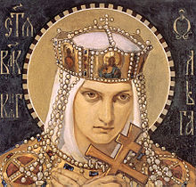
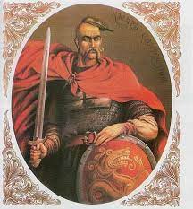
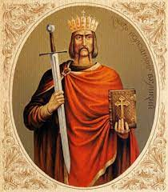
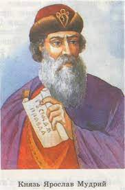

Княгиня ОльгаПісля смерті чоловіка, князя Ігоря, Ольга стала першою жінкою, яка правила Давньоруською державою. Вона проводила жорстку політику по відношенню до племен, що підкорялися Києву. З літописів відома історія розправи Ольги зі знаттю древлян — в землях цього племені при зборі данини був убитий Ігор. Після цього за наказом княгині була вдосконалена тодішня фіскальна система: по всій державі були побудовані опорні пункти для збирання данини — погости. У 957 році княгиня здійснила дипломатичну місію в Константинополь, столицю Візантії. Там вона зустрілася з імператором Костянтином і уклала договір — очевидно, торговий. Пробувши у Візантії більше півроку, Ольга перейнялася досягненнями найсильнішої на той час християнської держави. Того ж року вона прийняла християнство, але поширити нову релігію на своїй батьківщині їй не вдалося. |
Святослав ІгоровичЗайнявши київський престол, Святослав значно розширив володіння Давньоруської держави на північному сході і розгромив багатовікового ворога Русі — Хозарський каганат. Під владою Києва виявилися волзькі болгари, землі в нижній течії Волги, Таманський та Керченський півострови (Тмутаракань). А оскільки приєднаними територіями проходили головні торговельні шляхи, це посилило економіку Стародавньої Русі. Святослав успішно воював з Візантією. Від його першого походу на імперію Константинополь відкупився 15 кентинаріями золота (480 кг). Однак це ненадовго зупинило київського князя, який планував створити велику імперію з землями на Балканах, а столицю перенести на Дунай. До своєї мети він наблизився у 971 році, коли зайняв кілька болгарських міст і увійшов у Фракію, провінцію Візантії. На мирні переговори з князем прибув тоді сам візантійський імператор Іоанн I Цимісхій і запропонував Святославу велику данину. Уклавши мирний договір з Візантією, Святослав повернув коней на Київ. Біля дніпровських порогів він потрапив у засідку печенізького хана Курі і був убитий. |
Володимир Святославич (Великий)Релігійна реформа сприяла і державним перетворенням. Посилилася міць Києва на чолі великих територій на адміністративному рівні, чого не було за батька Володимира Святослава, який рідко бував у Києві і все життя провів у походах. Володимир створив державну раду, до якої, крім бояр — старої спадкової знаті, також входили представники великих міст. Рада була інструментом законодавчої і виконавчої влади. Володимир — перший глава Київської Русі, який почав карбувати власні монети: златники й срібники. На них, а також на об'єктах державного значення князь велів ставити свій знак — тризуб, прообраз нинішнього герба України. |
Ярослав Володимирович (Мудрий)При великому київському князеві Ярославі Володимировичу максимально розширилась територія Давньоруської держави. Влада Києва простягалася від Чорного до Балтійського моря — з півдня на північ — і від Карпат до Волги — з заходу на схід. Політична і військова міць Давньоруської держави була визнана в Європі. Дочки Ярослава були одружені з королями Франції, Угорщини, Норвегії, Данії, Англії, що в ті часи вважалося своєрідним договором про дружбу і співпрацю. Князь склав перший у Східній Європі письмовий звід законів — Правда Ярослава. На кілька століть він став основою для системи права сусідніх держав, наприклад Великого князівства Литовського. Ярослав послабив міць правлячої до нього варязької верхівки, наділяючи державними повноваженнями представників місцевих слов'янських еліт. Мудрим князь вважався в народі завдяки тому, що підніс на світовий рівень культуру і освіту. При ньому виникли школи живопису, кам'яного будівництва і літописання, відкривалися навчальні заклади. При Софійському соборі в Києві була зібрана велика бібліотека. |